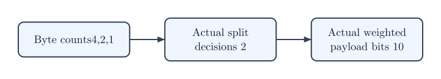
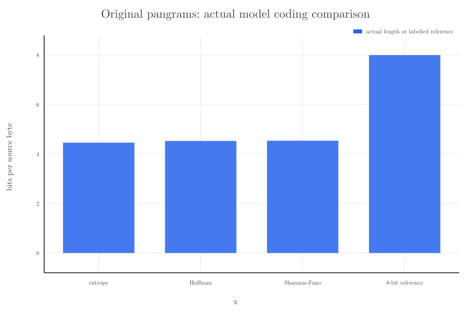
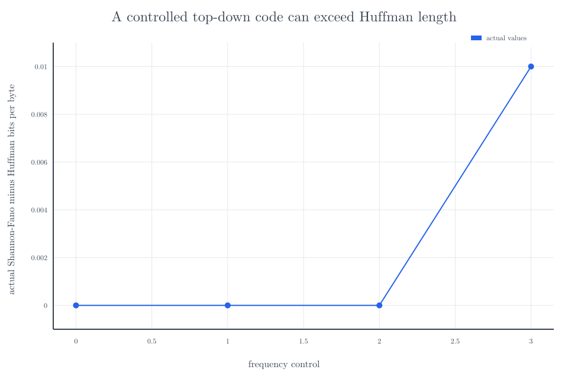
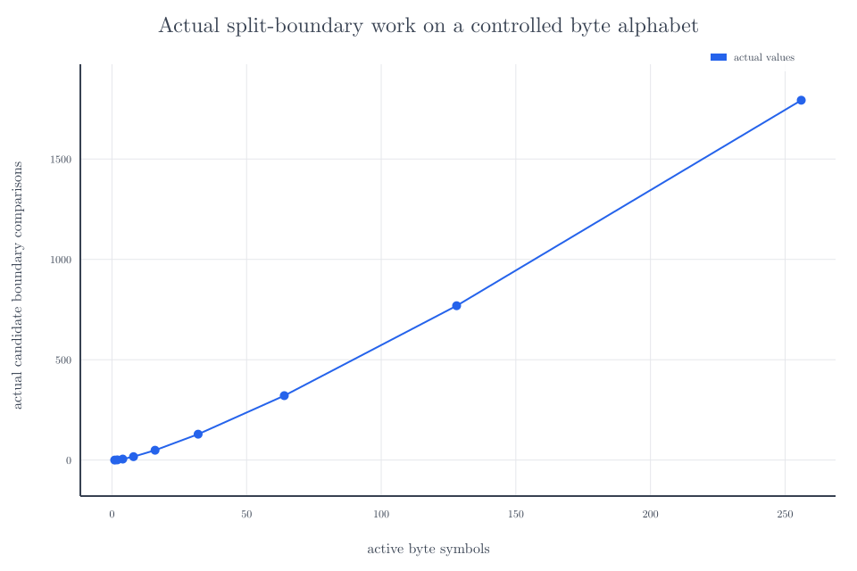

Shannon–Fano partitions: actual split choices and Huffman comparison
Abstract
Build a byte prefix code by repeatedly splitting a frequency-ordered alphabet into two groups with nearly equal total counts. Actual native choices precede the original85-byte pangram comparison with empirical entropy, Huffman and the8-bit baseline.
Mechanism and mathematical scope
Sort symbols by decreasing frequency. At each nonleaf range choose the earliest split minimizing absolute left-minus-right weight, append0 to left words and1 to right words, then recurse. Distinct leaves separate at a split, proving prefix-freeness. This greedy top-down choice need not minimize weighted path length; Huffman supplies the optimal binary prefix-code comparison under the stated symbol model. Empty input has no words and zero average; a singleton uses one bit. Native construction counters measure actual candidate boundary tests and word-bit appends. Encoding and decoding use the checked complete-payload trie shared with the midpoint-code implementation.
A tiny actual producing history
The table and native concept diagram read the same producing execution. Every block below is a complete editable C++ program.
#include <dm/dm.hpp>
int main() {
namespace a = dm::algorithms;
namespace g = dm::graphics;
std::filesystem::create_directories("build");
auto r = a::shannon_fano_build_trace("aaaabbc");
std::print("Actual sorted byte ids `{}`, counts `{}`.\n\n| begin | end | actual split | left count | " "right count | imbalance |\n| ---: | ---: | ---: | ---: | ---: | ---: |\n",
r.sorted_symbols, r.sorted_frequencies);
for (const auto &s : r.splits)
std::print("| {} | {} | {} | {} | {} | {} |\n", s.begin, s.end,
s.middle, s.left, s.right, s.imbalance);
g::Diagram concept_diagram(48, 1100);
concept_diagram.node("n0", {0, 0}, "Byte counts4,2,1");
concept_diagram.node("n1", {5, 0},
std::format("Actual split decisions {}",
r.splits.size()));
concept_diagram.node("n2", {10, 0},
std::format("Actual weighted payload bits {}",
r.weighted_bits));
concept_diagram.edge("n0", "n1").edge("n1", "n2");
concept_diagram.save_svg("build/shannon_fano_tiny.svg");
}Actual sorted byte ids [97, 98, 99], counts [4, 2, 1].
| begin | end | actual split | left count | right count | imbalance |
|---|---|---|---|---|---|
| 0 | 3 | 1 | 4 | 3 | 1 |
| 1 | 3 | 2 | 2 | 1 | 1 |

The retained original experiment
#include <dm/dm.hpp>
int main() {
namespace a = dm::algorithms;
namespace g = dm::graphics;
std::filesystem::create_directories("build");
const auto text = a::shannon_fano_example_text();
auto r = a::shannon_fano_build_trace(text);
auto hf = a::huffman_build(text);
auto encoded = a::shannon_fano_encode_trace(r.code, text);
auto decoded =
a::shannon_fano_decode_trace(r.code, encoded.bits, text.size());
std::vector<double> x{0, 1, 2, 3}, y{r.entropy,
a::huffman_average_bits(hf, text),
r.average_bits, 8};
std::print("Original {}-byte text: {}\n\n| quantity | actual bits per byte |\n| --- | ---: |\n| " "empirical entropy | {} |\n| Huffman | {} |\n| Shannon-Fano | {} |\n| fixed-byte reference | " "8 |\n\nActual encoded bits {}, decoded round-trip {}.\n",
text.size(), text, r.entropy, y[1], r.average_bits,
encoded.bits.size(), decoded.text == text);
if (decoded.text != text)
return 1;
auto plot = g::RPlot::create();
plot.bars(x, y, "actual length or labelled reference", {37, 99, 235}, .7).x_ticks(x, {"entropy", "Huffman", "Shannon-Fano", "8-bit reference"}).title("Original pangrams: actual model coding comparison").y_label("bits per source byte");
plot.save_svg("build/shannon_fano_original.svg");
}Original 85-byte text: the quick brown fox jumps over the lazy dog. pack my box with five dozen liquor jugs.
| quantity | actual bits per byte |
|---|---|
| empirical entropy | 4.462028731016167 |
| Huffman | 4.529411764705882 |
| Shannon-Fano | 4.541176470588235 |
| fixed-byte reference | 8 |
Actual encoded bits 386, decoded round-trip true.

Explicit controls
#include <dm/dm.hpp>
int main() {
namespace a = dm::algorithms;
namespace g = dm::graphics;
std::filesystem::create_directories("build");
const std::vector<std::vector<std::size_t>> counts{{}, {10}, {1, 1, 1, 1},
{35, 17, 17, 16, 15}};
std::vector<double> x, y;
std::print("| controlled frequencies | actual Shannon-Fano average | actual Huffman average | " "difference |\n| --- | ---: | ---: | ---: |\n");
for (std::size_t i = 0; i < counts.size(); ++i) {
auto text = a::shannon_fano_frequency_text(counts[i]);
auto r = a::shannon_fano_build_run(text);
auto h = a::huffman_build(text);
const double optimal = a::huffman_average_bits(h, text);
std::print("| `{}` | {} | {} | {} |\n", counts[i], r.average_bits,
optimal, r.average_bits - optimal);
x.push_back(i);
y.push_back(r.average_bits - optimal);
}
auto plot = g::RPlot::create();
plot.lines(x, y, "actual values", {37, 99, 235}).points(x, y, {37, 99, 235},
5).title(
"A controlled top-down code can exceed Huffman length").x_label(
"frequency control").y_label("actual Shannon-Fano minus Huffman bits per byte");
plot.save_svg("build/shannon_fano_controls.svg");
}| controlled frequencies | actual Shannon-Fano average | actual Huffman average | difference |
|---|---|---|---|
[] | 0 | 0 | 0 |
[10] | 1 | 1 | 0 |
[1, 1, 1, 1] | 2 | 2 | 0 |
[35, 17, 17, 16, 15] | 2.31 | 2.3 | 0.010000000000000231 |

Actual selected work and sensitivity
#include <dm/dm.hpp>
int main() {
namespace a = dm::algorithms;
namespace g = dm::graphics;
std::filesystem::create_directories("build");
std::vector<double> x, y;
std::print("| distinct equal-count bytes | actual split comparisons | actual code-bit appends | actual " "average length |\n| ---: | ---: | ---: | ---: |\n");
for (std::size_t n : {1, 2, 4, 8, 16, 32, 64, 128, 256}) {
auto r =
a::shannon_fano_build_run(a::shannon_fano_frequency_text(
std::vector<std::size_t>(n, 1)));
std::print("| {} | {} | {} | {} |\n", n, r.split_comparisons,
r.code_bit_appends, r.average_bits);
x.push_back(n);
y.push_back(r.split_comparisons);
}
auto plot = g::RPlot::create();
plot.lines(x, y, "actual values", {37, 99, 235}).points(x, y, {37, 99, 235},
5).title(
"Actual split-boundary work on a controlled byte alphabet").x_label(
"active byte symbols").y_label("actual candidate boundary comparisons");
plot.save_svg("build/shannon_fano_work.svg");
}| distinct equal-count bytes | actual split comparisons | actual code-bit appends | actual average length |
|---|---|---|---|
| 1 | 0 | 1 | 1 |
| 2 | 1 | 2 | 1 |
| 4 | 5 | 8 | 2 |
| 8 | 17 | 24 | 3 |
| 16 | 49 | 64 | 4 |
| 32 | 129 | 160 | 5 |
| 64 | 321 | 384 | 6 |
| 128 | 769 | 896 | 7 |
| 256 | 1793 | 2048 | 8 |

API and interpretation
The byte model owns words but does not serialize a portable codebook. Raw NUL/high-byte identities are supported; frequency ties retain the historical platform char order. A model-only prefix-code comparison excludes storage of the model and source length. Native decoder validation rejects malformed words, missing branches, truncation and extra complete payload.
Reusable producers, fixtures and histories live in the canonical C++ library. Captured records own their values and do not come from a separate report replay. Selected counters and record/scalar policies are specified at their API boundaries; they are not peak-byte or wall-time budgets. Synthetic structural inputs are controlled fixtures for these mechanisms.
References
- Fano, The Transmission of Information, MIT RLE Technical Report65 (1949)
- Cover and Thomas, Elements of Information Theory, second edition, Data Compression chapter
Verification: 126 scoped native cases;21 directly instrumented ASan/UBSan
cases;124 executable public examples;492/492 full-file definitions and10 exact
Sfc64 members;10 hovers;1588 independent records/14377 checks;frozen comparisons
across all ten families with endpoint/full-width field corrections recorded;17
checkout/installed standalone headers and linked/umbrella consumers;40 executed
programs and40 inspected figures with both exports. The complete
original4000-step native tensor SOM trajectory agrees with an independent NumPy
replay, including every winner and final assignment. Receipts:
build/mepml-conversion/batch-344-353/.